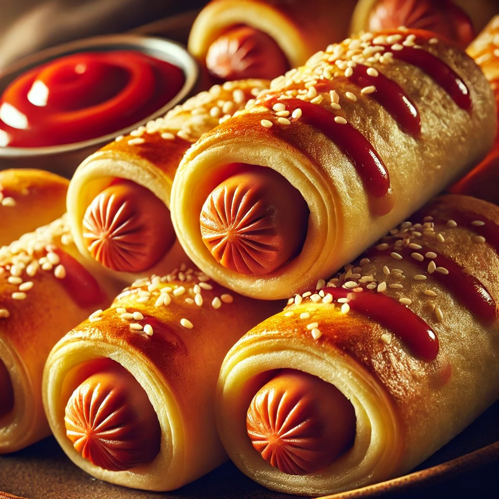

Hot Dog Roll Ups

Description:
Just when you thought hot dogs couldn’t get more fun, here's a tasty new twist. These bite-sized snacks are not only easy to make, but they’re also loaded with all your favorite hot dog fixin’s: Cheddar cheese, tangy mustard, crunchy onions, and a touch of sweet pickle relish. Paired with the creamy mayo dip, they’re irresistible for kids and adults alike.
Ingredients:
- 8 (1-ounce) slices white bread (such as Wonder Bread®)
- 2 tablespoons yellow mustard
- 4 thin slices sharp Cheddar cheese, halved
Steps:
- Gather all ingredients.
- Using a rolling pin, roll each bread slice until entirely flat. Trim just the crust off each bread slice, forming a 4x4-inch square. Spread each bread slice with an even layer of mustard (about 3/4 teaspoon per slice).
- Working with 1 slice of bread at a time, place a halved cheese slice on the edge of the bread closest to you; place 1 hot dog horizontally on top of the cheese slice. If needed, trim the ends of the hot dog so that no hot dog extends over edges of bread. Spoon 1 1/2 teaspoons onion horizontally across the cheese slice above the hot dog, followed by 1 teaspoon of relish.